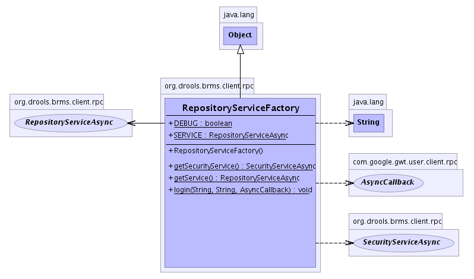

org.drools.brms.client.rpc
Class RepositoryServiceFactory
java.lang.Object
 org.drools.brms.client.rpc.RepositoryServiceFactory
org.drools.brms.client.rpc.RepositoryServiceFactory
public class RepositoryServiceFactory
- extends java.lang.Object
Creates instances of the repository service for the client code to use.
-
- 
|
Field Summary |
static boolean |
DEBUG
Change this to switch between debug/mock mode (ie web front end only)
versus full RPC (which requires the back end be running in some form). |
static RepositoryServiceAsync |
SERVICE
|
| Methods inherited from class java.lang.Object |
clone, equals, finalize, getClass, hashCode, notify, notifyAll, toString, wait, wait, wait |
DEBUG
public static boolean DEBUG
- Change this to switch between debug/mock mode (ie web front end only)
versus full RPC (which requires the back end be running in some form).
Can set it to DEBUG if you want to run it client side only.
SERVICE
public static RepositoryServiceAsync SERVICE
RepositoryServiceFactory
public RepositoryServiceFactory()
getService
public static RepositoryServiceAsync getService()
login
public static void login(java.lang.String userName,
java.lang.String password,
com.google.gwt.user.client.rpc.AsyncCallback cb)
- Perform the login.
getSecurityService
public static SecurityServiceAsync getSecurityService()